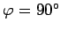

Inhalt Index DeskTop Bronstein

 Funktionen und ihre Darstellung Trigonometrische Funktionen (Winkelfunktionen) Grundlagen Definition und Darstellung
Funktionen und ihre Darstellung Trigonometrische Funktionen (Winkelfunktionen) Grundlagen Definition und Darstellung


| (2.64a) |
hat ihre Schnittpunkte mit der x-Achse bei sie sind zugleich die Wendepunkte mit dem Tangentenneigungswinkel  . Die Extrema befinden sich bei mit
. Die Extrema befinden sich bei mit  .
.
| (2.64b) |
läßt sich auch in der Form
| (2.64c) |
d.h. als allgemeine Sinusfunktion mit der Phasenverschiebung  schreiben.